Et voici la dernière technique de base qu'un débutant doit maîtriser : La bulle-tulipe, ou « tulip-twist » en anglais, parfois appelée bulle-pomme, ou « apple-twist » en anglais, en raison de sa forme.
Nous utiliserons cette technique assez rapidement, dans un prochain tutoriel : comment faire une fleur en ballon. Elle peut également être utilisée dans la confection d'une roue de voiture, etc.
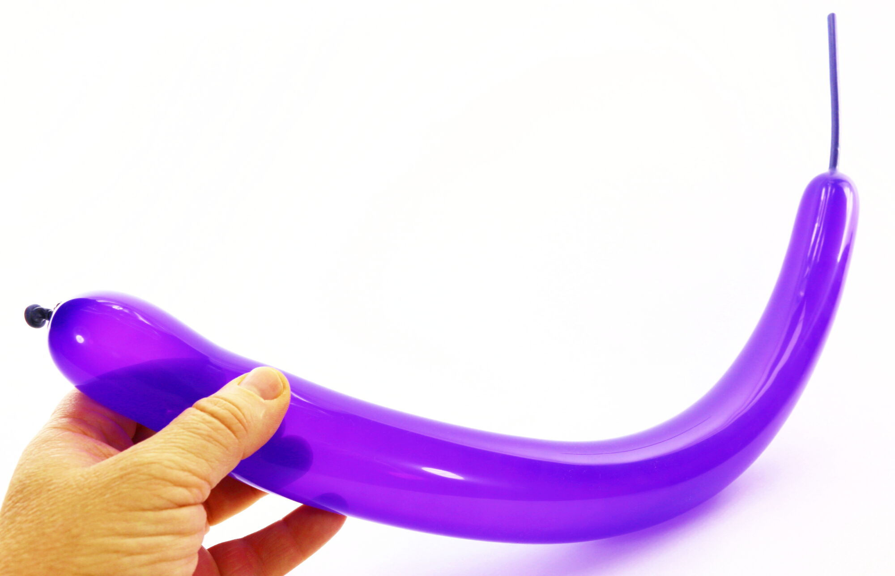1- Pour s'entraîner, gonfler un ballon, peu importe la longueur.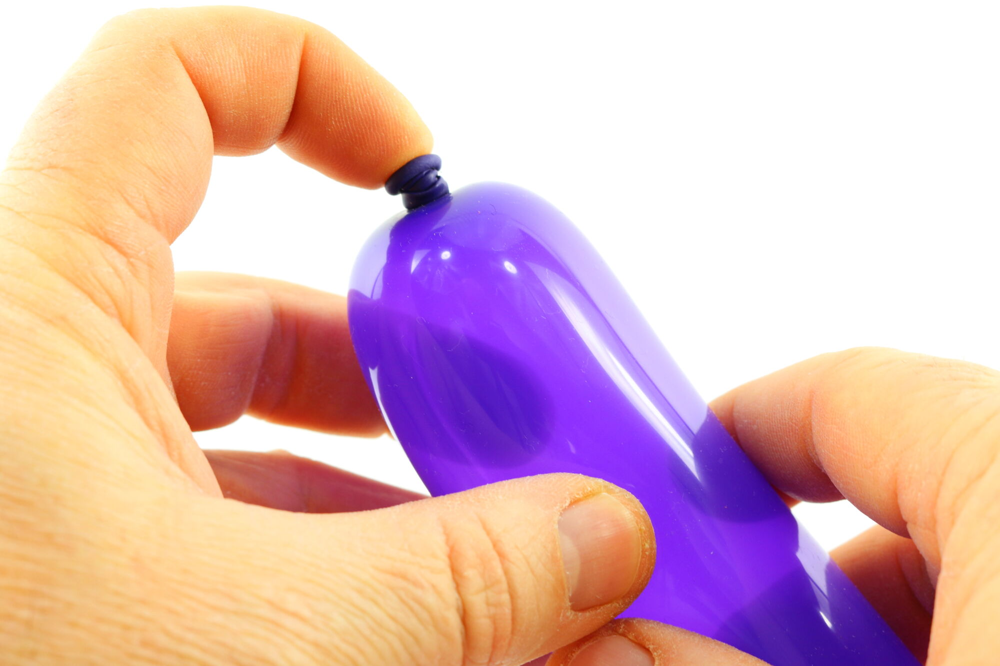2- Positionner l'index de la main de manipulation sur le nœud du ballon.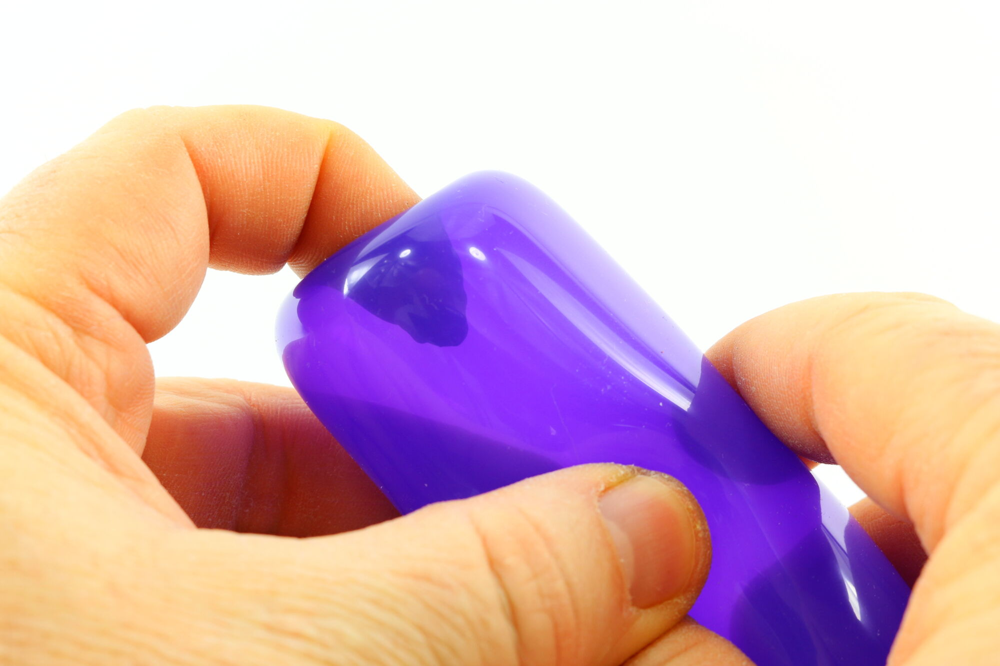3- Appuyer sur le nœud pour l'enfoncer à l'intérieur du ballon.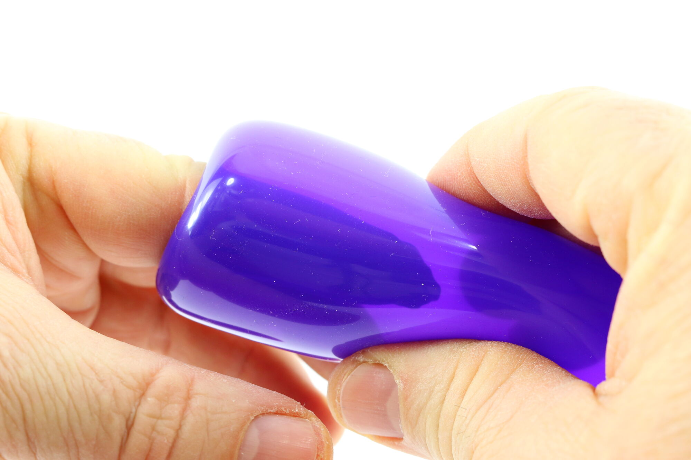4- Enfoncer le doigt assez profondément pour que le nœud (à l'intérieur du ballon) se retrouve au niveau du pouce et de l'index de la main de maintien (à l'extérieur du ballon).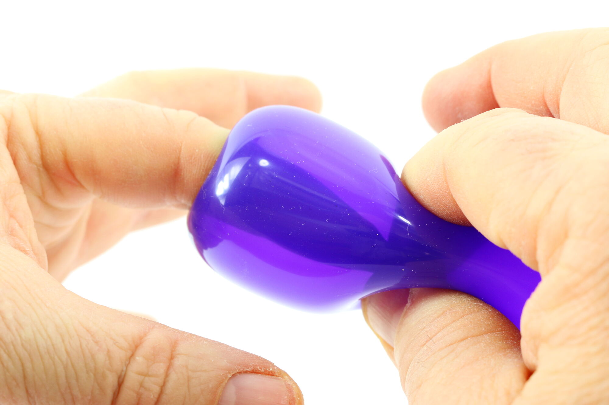5- À travers la paroi du ballon, attraper le nœud à l'aide du pouce et de l'index de la main de maintien, et le tenir fermement.6- Tout en maintenant fermement le nœud à l'intérieur du ballon, retirer doucement l'index de la main de manipulation, si nécessaire en s'aidant du pouce et du majeur de la même main (ou tout autre doigt disponible) pour alléger la pression de l'air qui encercle l'index pris dans le ballon.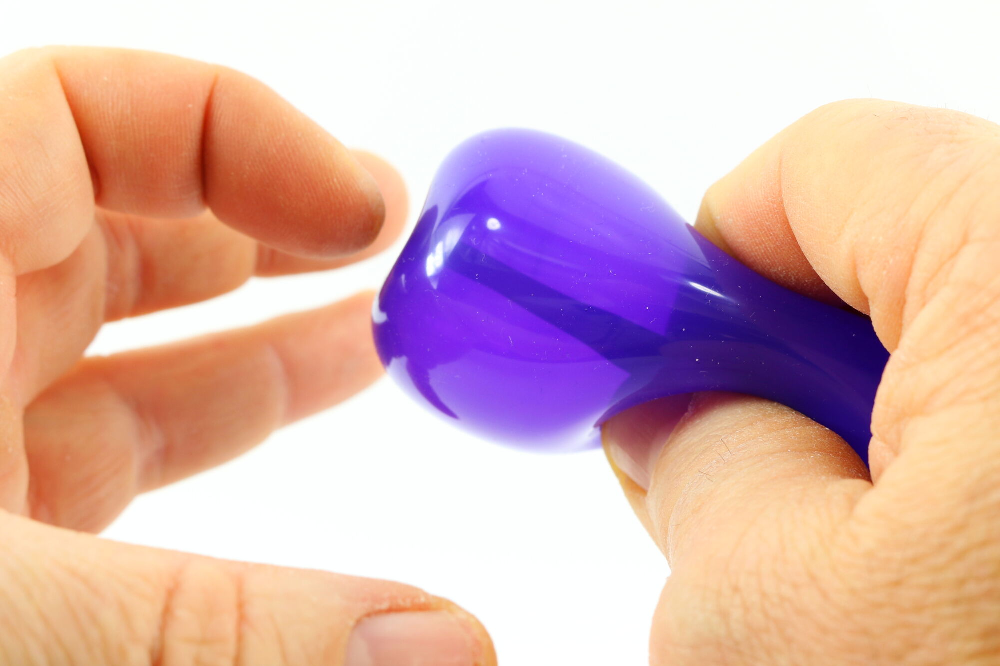7- Cette manipulation doit être effectuée très doucement et avec beaucoup de doigté (c'est le cas de le dire) afin de pouvoir extirper le doigt du ballon sans le faire exploser.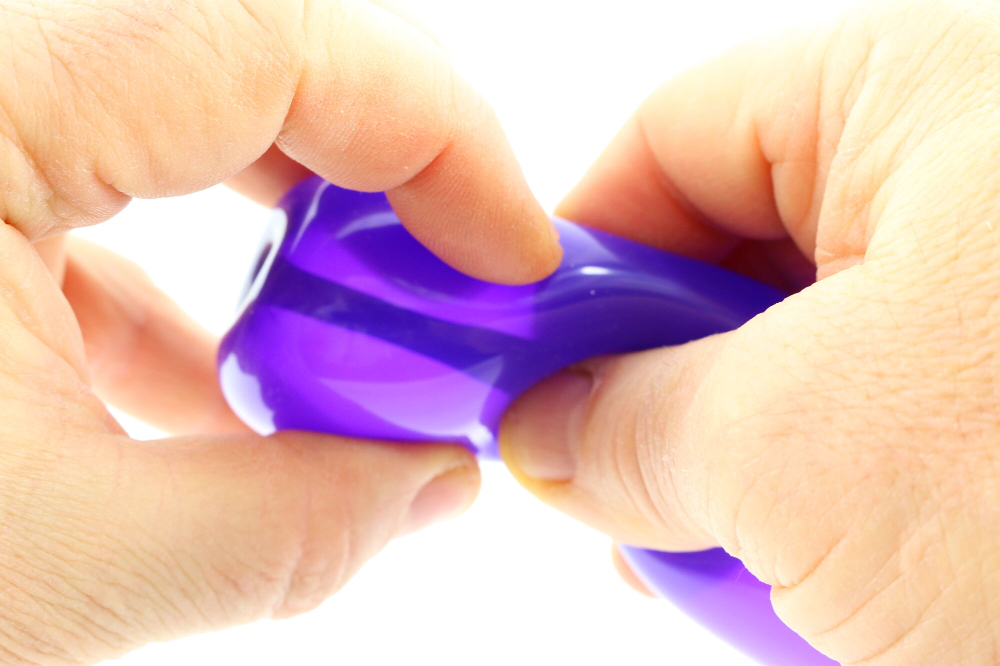8- À l'aide de la main de manipulation, appuyer sur le ballon tout près du nœud, toujours bloqué à travers la paroi du ballon par la main de maintien.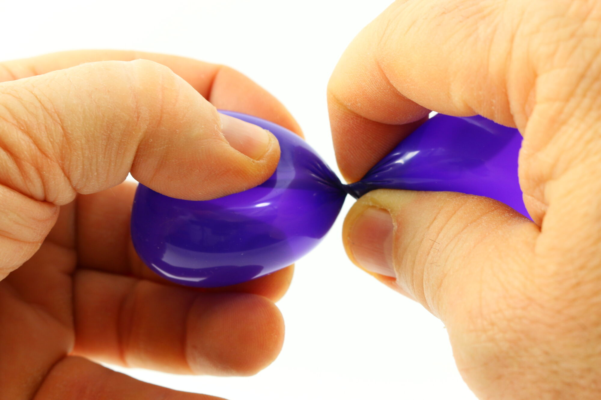9- Appuyer… et tourner, afin de former une bulle qui exclura le nœud dans le segment restant du ballon.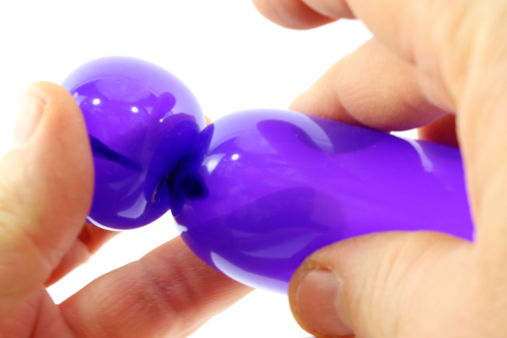10- En transparence, on peut distinguer le nœud coincé à l'extérieur de la bulle tulipe. Si on bloque une autre pièce en ballon (des pétales de fleur par exemple) dans le pli formé entre la bulle tulipe et le segment restant du ballon, le bulle tulipe sera sécurisée et ne risquera pas de se défaire.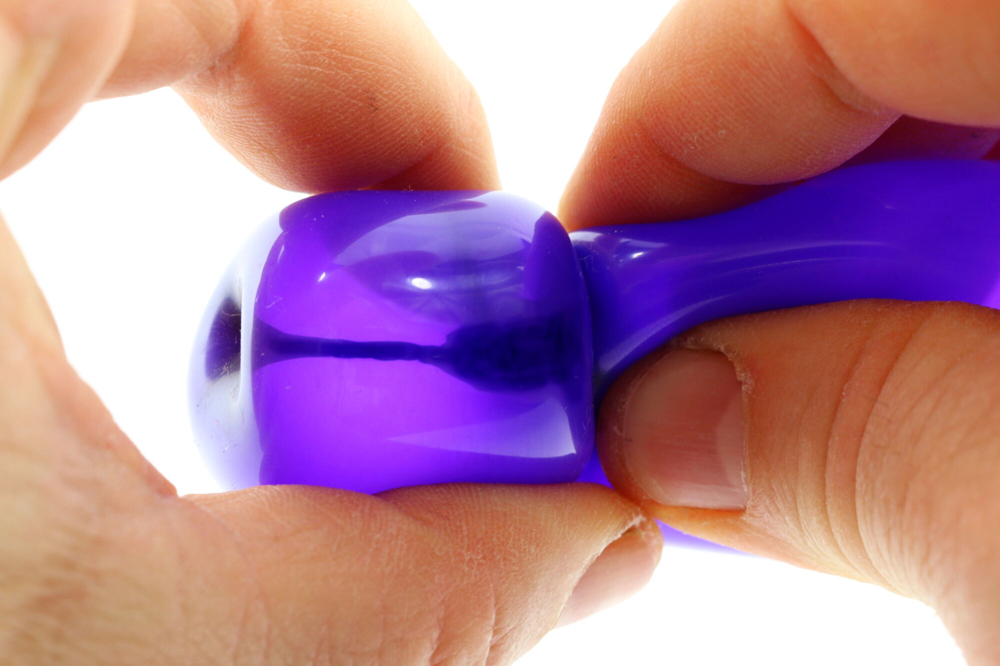11- Si on ne prévoit pas d'utiliser une autre pièce en ballon pour sécuriser le pli, il faudra alors repousser doucement le nœud à l'intérieur de la bulle tulipe tout en la faisant pivoter sur elle-même.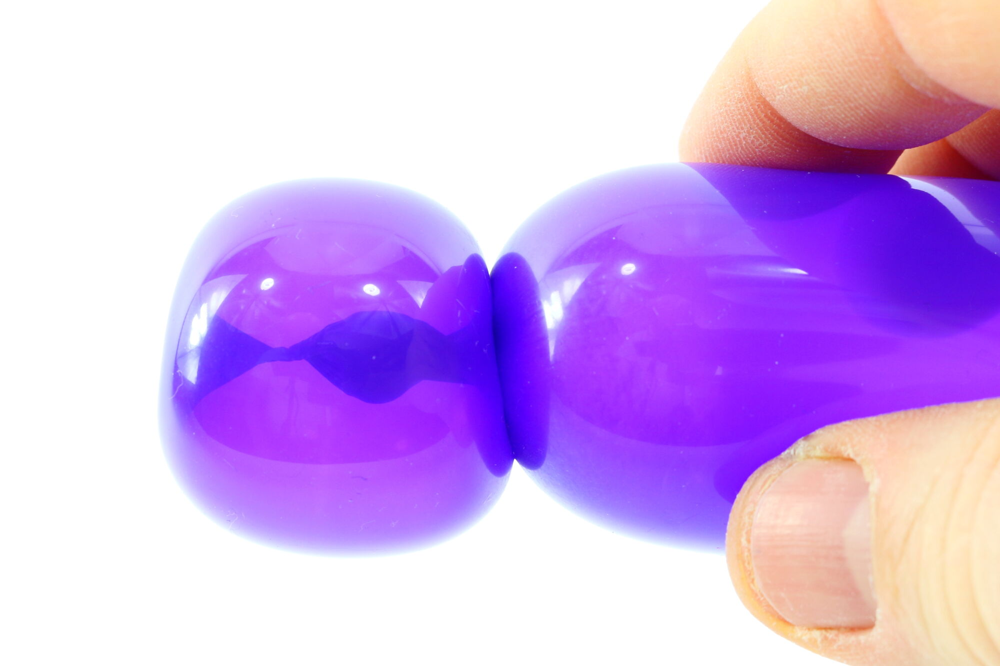12- En transparence, on distingue bien le nœud coincé et sécurisé au milieu de la bulle tulipe.13- Voilà notre bulle tulipe terminée !
À bientôt, pour une autre leçon... avec Môssieur Ballon !